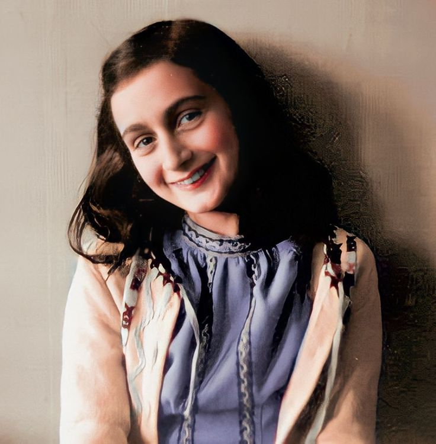

"Tenho vontade de escrever e necessidade ainda maior de desabafar tudo o que esta preso em meu peito. O papel tem mais paciência que as pessoas." -Anne Frank.
Annelies Marie Frank, nascida no dia 12 de junho de 1929 na cidade de Frankfurt, na
Alemanha, mas sua família mudou-se para Amsterdã em 1933 para escapar do regime nazista.
Durante a ocupação nazista dos Países Baixos, a família Frank se escondeu em um anexo secreto de um prédio
comercial em Amsterdã por mais de dois anos.
Nesse período, Anne manteve um diário onde registrava seus pensamentos, sentimentos e observações sobre
a
vida no esconderijo.
Seu diário, publicado postumamente como
"O Diário de Anne Frank", tornou-se uma das obras mais lidas do
mundo, proporcionando um olhar íntimo e comovente sobre as experiências de uma adolescente durante o
Holocausto.
Anne Frank morreu em 1945 no campo de concentração de Bergen-Belsen, poucas semanas antes de seu 16º
aniversário, mas seu diário e seu espírito resiliente continuam a inspirar gerações em todo o mundo.